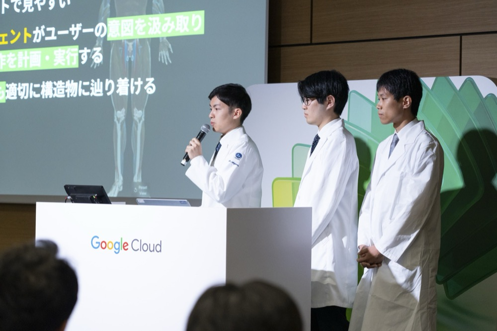

<!DOCTYPE html>
<html lang="ja">
<head>
  <meta charset="UTF-8">
  <meta name="viewport" content="width=device-width, initial-scale=1.0">
  <title>Ryuhei Aoyama / 青山 龍平</title>
  <link rel="preconnect" href="https://fonts.googleapis.com">
  <link rel="preconnect" href="https://fonts.gstatic.com" crossorigin="anonymous">
  <link href="https://fonts.googleapis.com/css2?family=Noto+Sans+JP:wght@300;400;500;700;900&family=Zen+Old+Mincho:wght@500;700&display=swap" rel="stylesheet">
  <script crossorigin src="https://unpkg.com/react@18.3.1/umd/react.production.min.js"></script>
  <script crossorigin src="https://unpkg.com/react-dom@18.3.1/umd/react-dom.production.min.js"></script>
  <script src="https://unpkg.com/@babel/standalone@7.29.0/babel.min.js"></script>
  <style>
    *, *::before, *::after { margin: 0; padding: 0; box-sizing: border-box; }
    html { scroll-behavior: smooth; }
    body { background: #fff; -webkit-font-smoothing: antialiased; -moz-osx-font-smoothing: grayscale; overflow-x: hidden; }
    ::-webkit-scrollbar { width: 0; height: 0; }
    .nav-menu::-webkit-scrollbar { display: none; }
    .nav-menu { -ms-overflow-style: none; scrollbar-width: none; }
    :root { --accent: #2E2C7E; }
    @media (prefers-reduced-motion: reduce) {
      .hero-rise { transition: none !important; opacity: 1 !important; transform: none !important; }
    }
  </style>
</head>
<body>
<div id="root"></div>
<script type="text/babel">

const { useState, useEffect } = React;

const F = '"Noto Sans JP", -apple-system, BlinkMacSystemFont, "Hiragino Sans", sans-serif';
const SERIF = '"Zen Old Mincho", "Hiragino Mincho ProN", serif';
const C = {
  bg: '#FFFFFF', light: '#EEF1F6', dark: '#000000',
  navy: '#2E2C7E', navyD: '#242270',
  text: '#1D1D1F', sec: '#5A5A66', tert: '#9AA0AE',
  border: 'rgba(0,0,0,0.09)',
};
const ACCENT = '#2E2C7E';
const s = (size, weight = 400, color = C.text, extra = {}) =>
  ({ fontFamily: F, fontSize: size, fontWeight: weight, color, ...extra });

/* breakpoint hook ── true under 760px */
const useIsMobile = (bp = 760) => {
  const [m, setM] = useState(typeof window !== 'undefined' ? window.innerWidth < bp : false);
  useEffect(() => {
    const fn = () => setM(window.innerWidth < bp);
    window.addEventListener('resize', fn);
    return () => window.removeEventListener('resize', fn);
  }, [bp]);
  return m;
};

/* scroll-reveal */
const useFade = () => useEffect(() => {
  const obs = new IntersectionObserver(es => es.forEach(e => {
    if (e.isIntersecting) { e.target.style.opacity = '1'; e.target.style.transform = 'none'; obs.unobserve(e.target); }
  }), { threshold: 0.1, rootMargin: '0px 0px -20px 0px' });
  document.querySelectorAll('[data-fade]').forEach((el, i) => {
    if (el.getBoundingClientRect().top < window.innerHeight) {
      el.style.opacity = '1'; el.style.transform = 'none';
    } else {
      el.style.opacity = '0'; el.style.transform = 'translateY(24px)';
      el.style.transition = `opacity .72s ${(i % 5) * .07}s ease,transform .72s ${(i % 5) * .07}s ease`;
      obs.observe(el);
    }
  });
  return () => obs.disconnect();
}, []);

/* ── SECTION HEAD (プレシジョン式：中央の紺日本語＋下に灰色英字) ── */
const SectionHead = ({ jp, en, dark = false, mb }) => (
  <div data-fade style={{ textAlign: 'center', marginBottom: mb || '48px' }}>
    <h2 style={{ ...s('clamp(23px,4.4vw,34px)', 500, dark ? '#FFFFFF' : C.navy), letterSpacing: '.04em', lineHeight: 1.3 }}>{jp}</h2>
    <p style={{ ...s('11px', 600, dark ? 'rgba(255,255,255,0.4)' : C.tert), letterSpacing: '.3em', textTransform: 'uppercase', marginTop: '9px' }}>{en}</p>
  </div>
);

/* pill CTA */
const Pill = ({ children, onClick, href, filled = true, dark = false, ...rest }) => {
  const base = {
    display: 'inline-flex', alignItems: 'center', gap: '8px',
    borderRadius: '980px', padding: '13px 26px', cursor: 'pointer',
    textDecoration: 'none', border: filled ? 'none' : `1px solid ${dark ? 'rgba(255,255,255,0.3)' : 'rgba(46,44,126,0.35)'}`,
    background: filled ? (dark ? '#FFFFFF' : C.navy) : 'transparent',
    ...s('14.5px', 500, filled ? (dark ? C.navy : '#fff') : (dark ? '#fff' : C.navy)),
    transition: 'filter .2s, transform .2s, background .2s, border-color .2s',
  };
  const El = href ? 'a' : 'button';
  return (
    <El href={href} onClick={onClick} style={base}
      onMouseEnter={e => { e.currentTarget.style.transform = 'translateY(-1px)'; if (filled) e.currentTarget.style.filter = 'brightness(1.08)'; }}
      onMouseLeave={e => { e.currentTarget.style.transform = 'none'; e.currentTarget.style.filter = 'none'; }}
      {...rest}>
      {children}
      <span style={{ fontSize: '12px', opacity: .8 }}>›</span>
    </El>
  );
};

/* ── NAV ── (常時白背景・プレシジョン式) */
const Nav = () => {
  const isMobile = useIsMobile();
  const [active, setActive] = useState('');
  useEffect(() => {
    const ids = ['about', 'anatom', 'works', 'contact'];
    const fn = () => {
      const y = window.scrollY + 120;
      let cur = '';
      for (const id of ids) {
        const el = document.getElementById(id);
        if (el && el.offsetTop <= y) cur = id;
      }
      if (window.innerHeight + window.scrollY >= document.body.scrollHeight - 8) cur = ids[ids.length - 1];
      setActive(cur);
    };
    fn();
    window.addEventListener('scroll', fn, { passive: true });
    window.addEventListener('resize', fn);
    return () => { window.removeEventListener('scroll', fn); window.removeEventListener('resize', fn); };
  }, []);
  const goto = id => { const el = document.getElementById(id); if (el) window.scrollTo({ top: el.offsetTop - 56, behavior: 'smooth' }); };
  return (
    <nav style={{
      position: 'fixed', top: 0, left: 0, right: 0, zIndex: 100, height: '56px',
      background: 'rgba(255,255,255,0.9)',
      backdropFilter: 'saturate(180%) blur(20px)', WebkitBackdropFilter: 'saturate(180%) blur(20px)',
      borderBottom: `1px solid rgba(0,0,0,0.08)`,
      display: 'flex', justifyContent: 'space-between', alignItems: 'center',
      padding: isMobile ? '0 16px' : '0 32px', gap: '10px'
    }}>
      <span onClick={() => window.scrollTo({ top: 0, behavior: 'smooth' })}
        style={{ ...s(isMobile ? '15px' : '17px', 700, C.navy), fontFamily: SERIF, letterSpacing: '.04em', cursor: 'pointer', whiteSpace: 'nowrap', flexShrink: 0 }}>
        {isMobile ? 'R. Aoyama' : 'Ryuhei Aoyama'}
      </span>
      <div style={{ display: 'flex', alignItems: 'center', gap: isMobile ? '12px' : '22px', minWidth: 0 }}>
        <div className="nav-menu" style={{ display: 'flex', gap: isMobile ? '13px' : '22px', overflowX: isMobile ? 'auto' : 'visible', minWidth: 0 }}>
          {[['about', 'About'], ['anatom', 'Anatom-AI'], ['works', '実績']].map(([id, lb]) => {
            const on = active === id;
            return (
              <button key={id} onClick={() => goto(id)} style={{
                background: 'none', border: 'none', cursor: 'pointer', padding: '0 0 2px',
                ...s(isMobile ? '12px' : '13px', on ? 600 : 400, on ? C.navy : C.sec),
                whiteSpace: 'nowrap', transition: 'color .2s'
              }}
                onMouseEnter={e => e.currentTarget.style.color = C.navy}
                onMouseLeave={e => e.currentTarget.style.color = on ? C.navy : C.sec}>
                {lb}
              </button>
            );
          })}
        </div>
        {!isMobile && (
          <button onClick={() => goto('contact')} style={{
            background: C.navy, border: 'none', borderRadius: '980px', padding: '9px 18px', cursor: 'pointer',
            ...s('12.5px', 500, '#fff'), whiteSpace: 'nowrap', transition: 'filter .2s'
          }}
            onMouseEnter={e => e.currentTarget.style.filter = 'brightness(1.12)'}
            onMouseLeave={e => e.currentTarget.style.filter = 'none'}>
            お問い合わせ
          </button>
        )}
      </div>
    </nav>
  );
};

/* ── HERO ── (黒維持・グローをインディゴに) */
const Hero = () => {
  const isMobile = useIsMobile();
  const [shown, setShown] = useState(false);
  useEffect(() => {
    const raf = requestAnimationFrame(() => requestAnimationFrame(() => setShown(true)));
    const t = setTimeout(() => setShown(true), 1200);
    return () => { cancelAnimationFrame(raf); clearTimeout(t); };
  }, []);
  const rise = (delay, dist = 26) => ({
    opacity: shown ? 1 : 0,
    transform: shown ? 'none' : `translateY(${dist}px)`,
    transition: `opacity 1s cubic-bezier(.22,.61,.36,1) ${delay}s, transform 1s cubic-bezier(.22,.61,.36,1) ${delay}s`,
  });
  return (
    <section style={{
      minHeight: '100vh', background: '#05060E', position: 'relative', overflow: 'hidden',
      display: 'flex', flexDirection: 'column', justifyContent: 'center', alignItems: 'center',
      padding: isMobile ? '100px 18px 80px' : '120px 24px 100px', textAlign: 'center'
    }}>
      <div style={{
        position: 'absolute', inset: 0, pointerEvents: 'none',
        background: 'radial-gradient(ellipse 72% 56% at 50% 44%, rgba(88,84,214,0.30) 0%, rgba(46,44,126,0.12) 45%, rgba(0,0,0,0) 76%)'
      }} />
      <div style={{
        position: 'absolute', inset: 0, pointerEvents: 'none',
        background: 'radial-gradient(ellipse 60% 52% at 50% 46%, rgba(0,0,0,0.5) 0%, rgba(0,0,0,0.2) 45%, rgba(0,0,0,0) 75%)'
      }} />
      <div style={{ position: 'relative', zIndex: 1, maxWidth: '920px', width: '100%' }}>
        <div className="hero-rise" style={{ ...rise(.15), display: 'flex', gap: '8px', justifyContent: 'center', flexWrap: 'wrap', marginBottom: isMobile ? '22px' : '28px' }}>
          {['医師', 'AIエンジニア'].map(lb => (
            <span key={lb} style={{
              ...s(isMobile ? '11px' : '12px', 500, 'rgba(255,255,255,0.62)'),
              border: '1px solid rgba(255,255,255,0.18)', borderRadius: '980px',
              padding: '5px 14px', letterSpacing: '.03em', whiteSpace: 'nowrap'
            }}>{lb}</span>
          ))}
        </div>
        <h1 className="hero-rise" style={{ ...rise(.32), ...s('clamp(40px,10vw,88px)', 700, '#FFFFFF'), fontFamily: SERIF, lineHeight: 1.1, letterSpacing: '.06em', marginBottom: isMobile ? '16px' : '20px' }}>
          青山 龍平
        </h1>
        <p className="hero-rise" style={{ ...rise(.5), ...s(isMobile ? '14px' : '17px', 300, 'rgba(255,255,255,0.6)'), letterSpacing: '.14em' }}>
          Ryuhei Aoyama · Moore
        </p>
      </div>
      <div className="hero-rise" style={{ ...rise(1, 0), position: 'absolute', bottom: '24px', display: 'flex', flexDirection: 'column', alignItems: 'center', gap: '8px' }}>
        <span style={{ ...s('9px', 400, 'rgba(255,255,255,0.35)'), letterSpacing: '.35em', textTransform: 'uppercase' }}>scroll</span>
        <div style={{ width: '1px', height: '36px', background: 'linear-gradient(to bottom, rgba(255,255,255,0.35), transparent)' }} />
      </div>
    </section>
  );
};

/* ── ABOUT ── */
const About = () => {
  const isMobile = useIsMobile();
  return (
    <section id="about" style={{ background: C.bg, padding: isMobile ? '72px 0 24px' : '104px 0 36px' }}>
      <div style={{ maxWidth: '980px', margin: '0 auto', padding: isMobile ? '0 18px' : '0 24px' }}>
        <SectionHead jp="プロフィール" en="About" mb={isMobile ? '40px' : '56px'} />
        <div style={{
          display: 'grid',
          gridTemplateColumns: isMobile ? '1fr' : '3fr 2fr',
          gap: isMobile ? '40px' : '64px', alignItems: 'start'
        }}>
          <div data-fade style={{ display: 'flex', flexDirection: 'column', gap: '20px' }}>
            <p style={{ ...s(isMobile ? '15px' : '17px', 300, C.text), lineHeight: 1.85 }}>
              臨床・研究・政策・実装。医療を動かす四つの現場を往復する。<br />
              現在は初期臨床研修医として臨床力の研鑽を積みながら、自然言語で3D解剖学アトラスを操作するAI「Anatom-AI」を共同創業。現場で感じる医療の課題を、論文や政策提言の形で発信し、さらにプロダクトとして現場に還元するエコシステム構築を目指している。
            </p>
            <p style={{ ...s(isMobile ? '15px' : '17px', 300, C.text), lineHeight: 1.85 }}>
              出発点は、医療を「社会の仕組み」として捉える視点だった。東京大学医学部在学中，世界経済フォーラム（WEF）日本センターに参画する機会に恵まれた。約2年9ヶ月の活動では，医療データ活用に関する国際的な政策決定の場から，地域に根ざした病院を中心としたインフラ整備まで，広く社会を診る視点を培った。大学院の臨床疫学・経済学教室では特任研究員として、臨床四大誌のJAMAのオープンアクセス誌に筆頭著者として論文を発表。また同年、医学×テクノロジーのテーマで東京都医師会論文賞優秀賞を受賞した。
            </p>
            <p style={{ ...s(isMobile ? '15px' : '17px', 300, C.text), lineHeight: 1.85 }}>
              この視点を形にするための技術は、現場で積んだ。医療AI企業・株式会社プレシジョンでは研究協力者として、医師国家試験に挑む医療LLMのデータセット構築と学習手法の研究に2年間従事。あわせて、AI医療機器を医療現場で活用するためのKPI策定にも携わった。モデルをつくり、臨床で実際に機能するかを見極めること。その両者の経験が、Anatom-AIにも直結している。
            </p>
            <p style={{ ...s(isMobile ? '15px' : '17px', 300, C.text), lineHeight: 1.85 }}>
              臨床の実感、社会の構造、技術の可能性。どれか一つだけでは、医療は変わらない。好奇心の炎を絶やさず、多くの方と協働したいと考えている。余白では小説を書き、ワインとゲームデザインに凝る。領域を横断する好奇心は、おそらくその延長にある。
            </p>
          </div>
          <div data-fade>
            {[
              ['現在地', '初期臨床研修医（JIHS）'],
              ['研究領域', '公衆衛生・NLP・計算論的神経科学'],
              ['資格', '医師免許・統計検定1級（最優秀成績賞）・HSK5級'],
              ['言語', '日本語・英語・中国語（CEFR C1レベル）'],
              ['E-mail', 'ryuhei.aoyama@quadka.com'],
            ].map(([k, v]) => (
              <div key={k} style={{ padding: '14px 0', borderBottom: `1px solid ${C.border}` }}>
                <p style={{ ...s('12px', 600, C.navy), marginBottom: '4px', letterSpacing: '.02em' }}>{k}</p>
                <p style={{ ...s('14px', 500, C.text), wordBreak: 'break-word' }}>{v}</p>
              </div>
            ))}
          </div>
        </div>
      </div>
      <div style={{ maxWidth: '1280px', margin: '0 auto', padding: isMobile ? '64px 18px 0' : '92px 24px 0' }}>
        <div data-fade style={{ textAlign: 'center', marginBottom: isMobile ? '32px' : '20px' }}>
          <h3 style={{ ...s('clamp(19px,3.6vw,26px)', 500, C.navy), letterSpacing: '.04em' }}>経歴</h3>
          <p style={{ ...s('11px', 600, C.tert), letterSpacing: '.3em', textTransform: 'uppercase', marginTop: '8px' }}>Career Timeline</p>
        </div>
        <FlowTimeline />
      </div>
    </section>
  );
};

/* ── ANATOM-AI ── (黒帯・プロダクト画面を背景に) */
const AnatomAI = () => {
  const isMobile = useIsMobile();
  return (
    <section id="anatom" style={{ background: '#05060E', padding: isMobile ? '72px 0' : '104px 0', position: 'relative', overflow: 'hidden' }}>
      {/* 背景：プロダクト画面（上端をセクション上端に揃える） */}
      <div style={{
        position: 'absolute', inset: 0, pointerEvents: 'none',
        backgroundImage: 'url(aoyama/anatom-bg.jpg)',
        backgroundSize: 'cover',
        backgroundPosition: isMobile ? '72% top' : 'center top',
        opacity: .9
      }} />
      {/* スクリム：文字の可読性を確保する最小限の沈め */}
      <div style={{
        position: 'absolute', inset: 0, pointerEvents: 'none',
        background: 'radial-gradient(ellipse 85% 75% at 50% 48%, rgba(5,6,14,0.30) 0%, rgba(5,6,14,0.48) 55%, rgba(5,6,14,0.72) 100%)'
      }} />
      <div style={{ maxWidth: '980px', margin: '0 auto', padding: isMobile ? '0 18px' : '0 24px', position: 'relative', zIndex: 1 }}>
        <div data-fade style={{ display: 'flex', gap: '10px', justifyContent: 'center', alignItems: 'center', marginBottom: '20px', flexWrap: 'wrap' }}>
          <span style={{ ...s('11px', 600, 'rgba(255,255,255,0.72)'), letterSpacing: '.3em', textTransform: 'uppercase' }}>現在の事業</span>
          <span style={{ ...s('11px', 400, 'rgba(255,255,255,0.35)') }}>・</span>
          <span style={{ ...s('11px', 500, '#B3B0F5'), border: '1px solid rgba(179,176,245,0.4)', borderRadius: '4px', padding: '3px 10px' }}>特許出願中</span>
        </div>
        <h2 data-fade style={{ ...s('clamp(34px,8vw,74px)', 700, '#FFFFFF'), letterSpacing: '-0.02em', textAlign: 'center', lineHeight: 1.05, marginBottom: '18px' }}>Anatom-AI</h2>
        <p data-fade style={{ ...s('clamp(17px,2.5vw,25px)', 500, '#FFFFFF'), textAlign: 'center', maxWidth: '580px', margin: '0 auto 16px', lineHeight: 1.5, padding: '0 8px' }}>
          自然言語で操作する3D解剖学アトラス
        </p>
        <p data-fade style={{ ...s(isMobile ? '14px' : '15px', 300, 'rgba(255,255,255,0.66)'), textAlign: 'center', maxWidth: '600px', margin: isMobile ? '0 auto 44px' : '0 auto 56px', lineHeight: 1.85, padding: '0 8px' }}>
          「自然言語 → LLMエージェント → 3D解剖モデル操作」という独自アーキテクチャで、医学教育の体験を根本から変える。
        </p>
        <div data-fade style={{
          display: 'grid',
          gridTemplateColumns: isMobile ? '1fr' : 'repeat(3,1fr)',
          gap: isMobile ? '14px' : '16px'
        }}>
          {[
            { label: 'Google Cloud Japan\nAgentic AI Hackathon', val: '最優秀賞受賞', sub: '880エントリー→200チーム→優勝' },
            { label: '創業チーム', val: '4名体制', sub: '' },
            { label: '知的財産', val: '特許出願中', sub: '自然言語→3D操作アーキテクチャ' },
          ].map((item, i) => (
            <div key={i} style={{ background: '#fff', padding: isMobile ? '26px 22px' : '32px 26px', borderTop: `3px solid ${C.navy}`, borderRadius: '8px', boxShadow: '0 10px 34px rgba(0,0,0,0.42)' }}>
              <p style={{ ...s('12px', 500, C.sec), lineHeight: 1.6, whiteSpace: 'pre-line', marginBottom: '14px' }}>{item.label}</p>
              <p style={{ ...s(isMobile ? '20px' : '22px', 700, C.navy), letterSpacing: '-0.01em', marginBottom: item.sub ? '6px' : 0 }}>{item.val}</p>
              {item.sub && <p style={{ ...s('12px', 400, C.tert) }}>{item.sub}</p>}
            </div>
          ))}
        </div>
      </div>
    </section>
  );
};

/* ── SELECTED WORKS ── */
const Works = () => {
  const isMobile = useIsMobile();
  const works = [
    {
      tag: 'JAMA Network Open', year: '2024', logo: 'aoyama/jama.png',
      title: 'Clinic Characteristics and Antibiotic Prescribing for Acute Respiratory Infections in Japan',
      desc: '筆頭著者として掲載。UCLA Tsugawa Y氏との国際共同研究。日本の抗菌薬適正使用に関する公衆衛生研究。臨床系四大誌JAMAのオープン誌。',
      note: 'JAMA Netw Open. 2024;7(10):e2440406',
      link: 'https://doi.org/10.1001/jamanetworkopen.2024.40406'
    }, {
      tag: '東京都医師会 論文大賞', year: '2024', logo: 'aoyama/tokyo-med.png',
      title: '医療を再考する——社会的見地と技術革新から。',
      desc: 'このページの冒頭コピーでもあるマニフェスト的論文。社会医学とテクノロジーを統合する視点が公的に評価された。',
      note: '令和6年度 東京都医師会 論文大賞 優秀賞',
      link: 'https://www.tokyo.med.or.jp/wp-content/uploads/application/pdf/platanus2024.pdf'
    }, {
      tag: '世界経済フォーラム C4IRJ', year: '2020–2023', logo: 'aoyama/wef.jpeg',
      title: '医療データガバナンス・地域医療DX',
      desc: 'DFFT準拠の医療データ活用フロー開発、ツールキット作成・モデル自治体導入。医療過疎地デマンドバス運行計画（購買×移動データ解析）、医療AI企業インタビュー調査。',
      note: '国際的政策実装プラットフォームにて産官連携を経験',
      link: 'https://www3.weforum.org/docs/WEF_Five_Years_of_C4IR_Japan_2023.pdf'
    }, {
      tag: '株式会社プレシジョン', year: '2023–2025', logo: 'aoyama/precision.jpg',
      title: '医師国家試験向け医療LLM 研究',
      desc: '研究協力者として、医師国家試験に向けた医療LLMのデータセット構築・学習方法研究に2年間従事。AI医療機器のKPI設定等にも参画。Anatom-AIの技術的バックグラウンドと直結する実装経験。',
      note: '医療スタートアップにて民間企業の視点を経験', link: null
    }
  ];
  return (
    <section id="works" style={{ background: C.bg, padding: isMobile ? '72px 0' : '104px 0' }}>
      <div style={{ maxWidth: '980px', margin: '0 auto', padding: isMobile ? '0 18px' : '0 24px' }}>
        <SectionHead jp="主な実績" en="Selected Works" mb="14px" />
        <p data-fade style={{ ...s(isMobile ? '15px' : '17px', 300, C.sec), textAlign: 'center', marginBottom: isMobile ? '40px' : '56px' }}>研究・政策・産業をまたぐ主要な実績。</p>
        <div style={{
          display: 'grid',
          gridTemplateColumns: isMobile ? '1fr' : 'repeat(2,1fr)',
          gap: isMobile ? '14px' : '16px'
        }}>
          {works.map((w, i) => (
            <div data-fade key={i} style={{
              background: C.bg, borderRadius: '12px',
              padding: isMobile ? '26px 22px' : '36px 32px',
              border: `1px solid ${C.border}`, cursor: 'default',
              transition: 'transform .3s, box-shadow .3s, border-color .3s'
            }}
              onMouseEnter={e => { if (!isMobile) { e.currentTarget.style.transform = 'translateY(-3px)'; e.currentTarget.style.boxShadow = '0 12px 30px rgba(46,44,126,0.10)'; e.currentTarget.style.borderColor = 'rgba(46,44,126,0.2)'; } }}
              onMouseLeave={e => { if (!isMobile) { e.currentTarget.style.transform = 'none'; e.currentTarget.style.boxShadow = 'none'; e.currentTarget.style.borderColor = C.border; } }}>
              <div style={{ display: 'flex', justifyContent: 'space-between', alignItems: 'flex-start', marginBottom: '16px', gap: '10px' }}>
                <div style={{ display: 'flex', flexDirection: 'column', gap: '8px', alignItems: 'flex-start' }}>
                  <span style={{ ...s('11px', 600, C.navy), background: 'rgba(46,44,126,0.08)', padding: '4px 10px', borderRadius: '4px', letterSpacing: '.02em' }}>{w.tag}</span>
                  <span style={{ ...s('12px', 400, C.tert) }}>{w.year}</span>
                </div>
                {w.logo && }
              </div>
              <h3 style={{ ...s(isMobile ? '16px' : '17px', 700, C.text), letterSpacing: '-0.01em', lineHeight: 1.45, marginBottom: '12px' }}>{w.title}</h3>
              <p style={{ ...s(isMobile ? '13px' : '14px', 300, C.sec), lineHeight: 1.85, marginBottom: '16px' }}>{w.desc}</p>
              <div style={{ borderTop: `1px solid ${C.border}`, paddingTop: '12px', display: 'flex', justifyContent: 'space-between', alignItems: 'center', gap: '8px', flexWrap: 'wrap' }}>
                <p style={{ ...s('12px', 400, C.tert) }}>{w.note}</p>
                {w.link && <a href={w.link} target="_blank" rel="noreferrer" style={{ ...s('12px', 600, C.navy), textDecoration: 'none', whiteSpace: 'nowrap' }}>open →</a>}
              </div>
            </div>
          ))}
        </div>
      </div>
    </section>
  );
};

/* ── LOGO STRIP ── (関わってきた組織) */
const LogoStrip = () => {
  const isMobile = useIsMobile();
  const logos = [
    { src: 'aoyama/utokyo.jpg', alt: 'The University of Tokyo', h: 36 },
    { src: 'aoyama/ucla.png', alt: 'UCLA', h: 26 },
    { src: 'aoyama/wef.jpeg', alt: 'World Economic Forum', h: 46 },
    { src: 'aoyama/precision.jpg', alt: 'Precision', h: 30 },
    { src: 'aoyama/jihs.png', alt: 'Japan Institute for Health Security', h: 42 },
  ];
  return (
    <section style={{ background: C.bg, padding: isMobile ? '0 0 64px' : '0 0 88px' }}>
      <div style={{ maxWidth: '980px', margin: '0 auto', padding: isMobile ? '0 18px' : '0 24px' }}>
        <p data-fade style={{ ...s('11px', 600, C.tert), letterSpacing: '.3em', textTransform: 'uppercase', textAlign: 'center', marginBottom: isMobile ? '22px' : '28px' }}>Affiliations</p>
        <div data-fade style={{
          display: 'flex', flexWrap: 'wrap', gap: isMobile ? '32px 40px' : '56px',
          justifyContent: 'center', alignItems: 'center'
        }}>
          {logos.map((l, i) => (
            
          ))}
        </div>
      </div>
    </section>
  );
};

/* ── FLOW TIMELINE ── (横軸フロー型インフォグラフィック) */
const TL_NODES = [
  { date: '2019.04', org: '東京大学 理科三類', role: '入学', logo: 'aoyama/utokyo.jpg', lh: 22 },
  { date: '2020.11', org: 'World Economic Forum', role: '日本センター C4IRJ ／ 医療データガバナンス・地域医療DX', logo: 'aoyama/wef.jpeg', lh: 20 },
  { date: '2023.04', org: '株式会社プレシジョン', role: '研究協力者 ／ 医師国家試験向け医療LLM研究', logo: 'aoyama/precision.jpg', lh: 15 },
  { date: '2023.08', org: 'UCLA　PQI-Lab', role: 'Research Assistant', logo: 'aoyama/ucla.png', lh: 15 },
  { date: '2023.10', org: '東京大学大学院 臨床疫学・経済学教室', role: ' 特任研究員', logo: 'aoyama/utokyo.jpg', lh: 22 },
  { date: '2025.04〜', org: '初期臨床研修医', role: '国立国際医療センター（JIHS）', logo: 'aoyama/jihs.png', lh: 20, cur: true },
  { date: '2026.04〜', org: 'Anatom-AI', role: 'Co-founder ／ 開発・事業推進', logo: null, cur: true },
];

const FlowCard = ({ n }) => (
  <div style={{ background: '#fff', border: `1px solid ${n.cur ? 'rgba(46,44,126,0.35)' : C.border}`, borderRadius: '10px', padding: '13px 15px', boxShadow: '0 6px 18px rgba(0,0,0,0.07)', textAlign: 'left' }}>
    {n.logo && }
    <p style={{ ...s('13.5px', 700, C.navy), lineHeight: 1.35, marginBottom: '5px' }}>{n.org}</p>
    <p style={{ ...s('11.5px', 400, C.sec), lineHeight: 1.55 }}>{n.role}</p>
  </div>
);

const FlowTimeline = () => {
  const isMobile = useIsMobile(940);
  if (isMobile) {
    return (
      <div data-fade style={{ position: 'relative', paddingLeft: '26px', maxWidth: '520px', margin: '0 auto' }}>
        <div style={{ position: 'absolute', left: '5px', top: '6px', bottom: '6px', width: '2px', background: '#111' }} />
        {TL_NODES.map((n, i) => (
          <div key={i} style={{ position: 'relative', paddingBottom: i === TL_NODES.length - 1 ? 0 : '24px' }}>
            <div style={{ position: 'absolute', left: '-25.5px', top: '4px', width: '11px', height: '11px', borderRadius: '50%', background: n.cur ? C.navy : '#111', border: '2px solid #fff', boxShadow: `0 0 0 1.5px ${n.cur ? C.navy : '#111'}` }} />
            <span style={{ ...s('11.5px', 700, n.cur ? '#fff' : C.navy), background: n.cur ? C.navy : 'rgba(46,44,126,0.08)', padding: '3px 11px', borderRadius: '980px', display: 'inline-block', marginBottom: '8px' }}>{n.date}</span>
            <div style={{ display: 'flex', alignItems: 'center', gap: '8px', marginBottom: '3px' }}>
              {n.logo && }
              <p style={{ ...s('14.5px', 700, C.text), lineHeight: 1.4 }}>{n.org}</p>
            </div>
            <p style={{ ...s('12.5px', 300, C.sec), lineHeight: 1.55 }}>{n.role}</p>
          </div>
        ))}
      </div>
    );
  }
  return (
    <div data-fade style={{ overflowX: 'auto', paddingBottom: '10px' }}>
      <div style={{ position: 'relative', display: 'flex', minWidth: '1300px', height: '440px' }}>
        <div style={{ position: 'absolute', top: '220px', left: '24px', right: '46px', height: '2px', background: '#111' }} />
        <div style={{ position: 'absolute', top: '213px', right: '24px', width: 0, height: 0, borderTop: '8px solid transparent', borderBottom: '8px solid transparent', borderLeft: '15px solid #111' }} />
        {TL_NODES.map((n, i) => {
          const above = i % 2 === 0;
          return (
            <div key={i} style={{ position: 'relative', flex: '1 0 0', minWidth: '180px', height: '440px' }}>
              <div style={{ position: 'absolute', left: '50%', transform: 'translateX(-50%)', width: '178px', ...(above ? { bottom: '272px' } : { top: '272px' }) }}>
                <FlowCard n={n} />
              </div>
              <div style={{ position: 'absolute', left: '50%', transform: 'translateX(-50%)', width: 0, borderLeft: `1.5px dashed ${n.cur ? 'rgba(46,44,126,0.5)' : '#B4B8C4'}`, ...(above ? { top: '168px', height: '39px' } : { top: '233px', height: '39px' }) }} />
              <div style={{ position: 'absolute', left: '50%', top: '220px', transform: 'translate(-50%,-50%)', zIndex: 2, background: n.cur ? C.navy : '#fff', border: `1.5px solid ${n.cur ? C.navy : '#111'}`, borderRadius: '980px', padding: '5px 14px', whiteSpace: 'nowrap' }}>
                <span style={{ ...s('12.5px', 700, n.cur ? '#fff' : '#111'), letterSpacing: '.01em' }}>{n.date}</span>
              </div>
            </div>
          );
        })}
      </div>
    </div>
  );
};

/* ── ACADEMIC ── */
const Academic = () => {
  const isMobile = useIsMobile();
  const presentations = [
    '"自然言語処理解析で見るCOVID-19業種別ガイドラインの現状"',
    '"大規模マルチモーダル言語モデルによる認知症の言語症状の再現"',
    'NLP2025（言語処理学会）筆頭著者発表',
    '研修医1年次、内科地方会を始めとして優秀賞を3度受賞',
  ];
  const awards = [
    { y: '2026', t: 'Google Cloud Japan Agentic AI Hackathon 最優秀賞（880エントリー中1位）' },
    { y: '2025', t: 'HSK5級（中国語検定）' },
    { y: '2025', t: '医師免許取得' },
    { y: '2024', t: '東京都医師会 論文大賞 優秀賞（令和6年度）' },
    { y: '2023', t: '統計検定1級 医薬生物学分野 最優秀成績賞' },
    { y: '2022', t: '学生ハッカソン 準優勝' },
  ];
  return (
    <section style={{ background: C.bg, padding: isMobile ? '72px 0' : '104px 0', borderTop: `1px solid ${C.border}` }}>
      <div style={{ maxWidth: '980px', margin: '0 auto', padding: isMobile ? '0 18px' : '0 24px' }}>
        <SectionHead jp="論文・受賞" en="Publications & Awards" mb={isMobile ? '44px' : '60px'} />
        <div style={{
          display: 'grid',
          gridTemplateColumns: isMobile ? '1fr' : '1fr 1fr',
          gap: isMobile ? '56px' : '72px'
        }}>
          <div>
            <h3 data-fade style={{ ...s('clamp(19px,4vw,26px)', 700, C.navy), letterSpacing: '-0.01em', marginBottom: isMobile ? '20px' : '28px' }}>論文・発表</h3>
            <div data-fade style={{ padding: '20px 0', borderBottom: `1px solid ${C.border}`, marginBottom: '8px' }}>
              <span style={{ ...s('12px', 600, C.navy) }}>査読付き原著論文</span>
              <p style={{ ...s(isMobile ? '14px' : '15px', 700, C.text), margin: '8px 0 5px', lineHeight: 1.5, letterSpacing: '-.005em' }}>
                Clinic Characteristics and Antibiotic Prescribing for Acute Respiratory Infections in Japan
              </p>
              <p style={{ ...s('13px', 300, C.sec), lineHeight: 1.6, marginBottom: '4px' }}>
                <strong style={{ fontWeight: 500, color: C.text }}>Aoyama R</strong>, Tsugawa Y (UCLA), Ishikane M, Kitajima K, Sato D, Miyawaki A.
              </p>
              <p style={{ ...s('13px', 300, C.sec) }}>JAMA Network Open. 2024;7(10):e2440406.</p>
              <a href="https://doi.org/10.1001/jamanetworkopen.2024.40406" target="_blank" rel="noreferrer"
                style={{ ...s('12px', 600, C.navy), textDecoration: 'none', display: 'inline-block', marginTop: '6px', wordBreak: 'break-all' }}>
                DOI: 10.1001/jamanetworkopen.2024.40406 →
              </a>
            </div>
            <div data-fade style={{ padding: '20px 0', borderBottom: `1px solid ${C.border}`, marginBottom: '8px' }}>
              <span style={{ ...s('12px', 600, C.navy) }}>受賞論文</span>
              <p style={{ ...s(isMobile ? '14px' : '15px', 500, C.text), margin: '6px 0 5px', lineHeight: 1.5 }}>医療を再考する——社会的見地と技術革新から。</p>
              <p style={{ ...s('13px', 300, C.sec) }}>令和6年度 東京都医師会 論文大賞 優秀賞</p>
            </div>
            <h4 data-fade style={{ ...s('11px', 600, C.tert), letterSpacing: '.07em', margin: '24px 0 12px', textTransform: 'uppercase' }}>学会発表</h4>
            {presentations.map((p, i) => (
              <p data-fade key={i} style={{ ...s('13px', 300, C.text), lineHeight: 1.7, padding: '9px 0', borderBottom: `1px solid ${C.border}` }}>{p}</p>
            ))}
            <p data-fade style={{ ...s('13px', 300, C.text), lineHeight: 1.7, padding: '9px 0', borderBottom: `1px solid ${C.border}` }}>
              査読歴：<em>Annals of Internal Medicine</em>
            </p>
          </div>
          <div>
            <h3 data-fade style={{ ...s('clamp(19px,4vw,26px)', 700, C.navy), letterSpacing: '-0.01em', marginBottom: isMobile ? '20px' : '28px' }}>受賞・資格</h3>
            {awards.map((a, i) => (
              <div data-fade key={i} style={{ display: 'grid', gridTemplateColumns: '48px 1fr', gap: '16px', padding: '16px 0', borderBottom: `1px solid ${C.border}` }}>
                <span style={{ ...s('12px', 600, C.navy), paddingTop: '2px' }}>{a.y}</span>
                <p style={{ ...s(isMobile ? '14px' : '15px', 500, C.text), lineHeight: 1.5 }}>{a.t}</p>
              </div>
            ))}
          </div>
        </div>
      </div>
    </section>
  );
};

/* ── PURPOSE ── (プレシジョン式・引用＋写真) */
const Purpose = () => {
  const isMobile = useIsMobile();
  return (
    <section style={{ background: C.light, padding: isMobile ? '72px 0' : '104px 0' }}>
      <div style={{ maxWidth: '1040px', margin: '0 auto', padding: isMobile ? '0 18px' : '0 24px' }}>
        <SectionHead jp="パーパス" en="Purpose" mb={isMobile ? '40px' : '56px'} />
        <div style={{
          display: 'grid',
          gridTemplateColumns: isMobile ? '1fr' : '1fr 0.85fr',
          gap: isMobile ? '32px' : '56px', alignItems: 'center'
        }}>
          <div data-fade>
            <div style={{ ...s('clamp(40px,7vw,72px)', 700, 'rgba(46,44,126,0.18)'), fontFamily: SERIF, lineHeight: 0.6, marginBottom: '10px' }}>“</div>
            <h3 style={{ ...s('clamp(22px,3.6vw,32px)', 700, C.navy), fontFamily: SERIF, lineHeight: 1.5, letterSpacing: '.02em', marginBottom: '20px' }}>
              医療を再考する——<br />社会的見地と技術革新から。
            </h3>
            <p style={{ ...s(isMobile ? '14px' : '15px', 300, C.sec), lineHeight: 1.9, marginBottom: '24px' }}>
              政策・公衆衛生・テクノロジー。三つの視座から医療を捉え直すこと。これは東京都医師会 論文大賞で評価されたマニフェストであり、Anatom-AIをはじめとする活動すべての起点である。臨床の現場と、社会・技術の最前線。その両方に立ち続けることで、医療の「こうありたい」を形にする。
            </p>
            <div style={{ borderTop: `1px solid rgba(46,44,126,0.2)`, paddingTop: '14px' }}>
              <p style={{ ...s('12px', 400, C.tert), marginBottom: '2px' }}>医師・Anatom-AI Co-founder</p>
              <p style={{ ...s('15px', 700, C.navy), fontFamily: SERIF, letterSpacing: '.04em' }}>青山 龍平 — Ryuhei Aoyama</p>
            </div>
          </div>
          <div data-fade style={{ order: isMobile ? -1 : 0 }}>
            <div style={{ borderRadius: '12px', overflow: 'hidden', boxShadow: '0 12px 36px rgba(46,44,126,0.14)', aspectRatio: isMobile ? '4 / 3' : '3 / 4' }}>
              
            </div>
            <p style={{ ...s('11.5px', 400, C.tert), lineHeight: 1.6, marginTop: '10px', textAlign: isMobile ? 'center' : 'left' }}>
              Google Cloud Japan Agentic AI Hackathon 最優秀賞 受賞時の登壇（左端）
            </p>
          </div>
        </div>
      </div>
    </section>
  );
};

/* ── CONTACT ── (白帯) */
const Contact = () => {
  const isMobile = useIsMobile();
  return (
    <section id="contact" style={{ background: C.bg, padding: isMobile ? '80px 18px' : '112px 24px', textAlign: 'center' }}>
      <div data-fade style={{ maxWidth: '640px', margin: '0 auto' }}>
        <SectionHead jp="お問い合わせ" en="Contact" mb="20px" />
        <p style={{ ...s(isMobile ? '15px' : '17px', 300, C.sec), lineHeight: 1.8, marginBottom: isMobile ? '32px' : '40px' }}>
          お気軽にご連絡ください。
        </p>
        <div style={{ display: 'flex', gap: '12px', justifyContent: 'center', flexWrap: 'wrap' }}>
          <Pill href="mailto:ryuhei.aoyama@quadka.com" filled>E-mailを送る</Pill>
          <a href="https://www.facebook.com/share/1AxGKqnFcZ/?mibextid=wwXIfr" target="_blank" rel="noreferrer" style={{
            display: 'inline-flex', alignItems: 'center', gap: '8px',
            background: 'transparent', border: `1px solid rgba(46,44,126,0.35)`, borderRadius: '980px',
            padding: '13px 24px', textDecoration: 'none', ...s(isMobile ? '13px' : '14px', 500, C.navy), transition: 'border-color .2s, background .2s'
          }}
            onMouseEnter={e => { e.currentTarget.style.borderColor = C.navy; e.currentTarget.style.background = 'rgba(46,44,126,0.05)'; }}
            onMouseLeave={e => { e.currentTarget.style.borderColor = 'rgba(46,44,126,0.35)'; e.currentTarget.style.background = 'transparent'; }}>Meta (Facebook)</a>
        </div>
      </div>
    </section>
  );
};

/* ── FOOTER ── (紺ベタ) */
const Footer = () => {
  const isMobile = useIsMobile();
  return (
    <footer style={{
      background: C.navy,
      padding: isMobile ? '32px 18px' : '40px 32px',
      display: 'flex',
      flexDirection: isMobile ? 'column' : 'row',
      justifyContent: 'space-between',
      alignItems: isMobile ? 'flex-start' : 'center',
      flexWrap: 'wrap', gap: isMobile ? '10px' : '8px'
    }}>
      <span style={{ ...s('16px', 700, '#fff'), fontFamily: SERIF, letterSpacing: '.05em' }}>Ryuhei Aoyama / 青山 龍平</span>
      <span style={{ ...s(isMobile ? '11px' : '12px', 300, 'rgba(255,255,255,0.55)') }}>Copyright © 2026 Ryuhei Aoyama. All rights reserved.</span>
    </footer>
  );
};

/* ── APP ── */
const App = () => {
  useFade();
  return (
    <div>
      <Nav /><Hero /><About /><LogoStrip /><AnatomAI /><Works /><Academic /><Purpose /><Contact /><Footer />
    </div>
  );
};

ReactDOM.createRoot(document.getElementById('root')).render(<App />);

</script>
</body>
</html>
